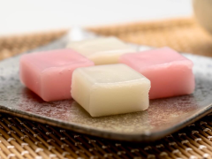
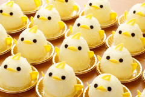
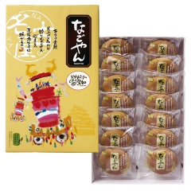
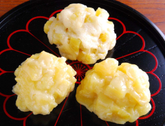

名古屋のお土産TOP３
※このランキングは作成者の独断と偏見で決めています。あらかじめご了承ください。
-

- 第１位 ういろう
- ういろうは米粉やわらび粉、小麦粉などに砂糖や温水を練り混ぜて蒸し上げた和菓子の一種であり，日本各地に名産地があります． 名古屋のういろうはうるち米からできる米粉を用いたもので，もっちりとした食感と程よい弾力が特徴です．
-

- 第２位 ぴよりん
- ぴよりんは名古屋コーチンの卵を使ったひよこ型のスイーツです．ハロウィンぴよりんやバレンタインぴよりんなど，季節によって様々な種類が存在します．
-

- 第３位 なごやん
- なごやんはPascoのロングセラー商品です．少し薄めの皮にたっぷりの黄味あんが詰まっています． 手軽に買うことができ，ボリュームもあっておいしいため，お土産だけでなくおやつとしても人気があります．
-

- 番外編 鬼まんじゅう
- 鬼まんじゅうは名古屋市や愛知県内，岐阜で古くから親しまれているおやつです．薄力粉と砂糖を混ぜ合わせた生地に、角切りのさつまいもを加えて蒸し上げて作ります． 値段も良心的で，比較的簡単に作ることもできます．